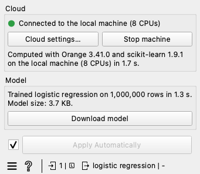

Trains any Orange learner on a cloud table, on the machine. The model stays on the machine; you can download it.

Like every Cloud widget, it has a Cloud box at the top: whether a machine is connected, Cloud settings… and Stop machine, and what the last job ran with, how long it took and what it cost. See Cloud widgets.
Connect a learner widget's Learner output here, and don't connect the cloud table to the learner widget itself: with a cloud table as input, Orange's learner widgets say "Data contains a single target value", because they see only the placeholder row.
The model's size shows after training. Download model asks first when it's larger than 100 MB: some models contain the training data (k-nearest neighbours, and Orange's trees).
Random forests and other scikit-learn learners that use one core by default use all of the machine's cores; the model is the same. Training again deletes the previous model on the machine.